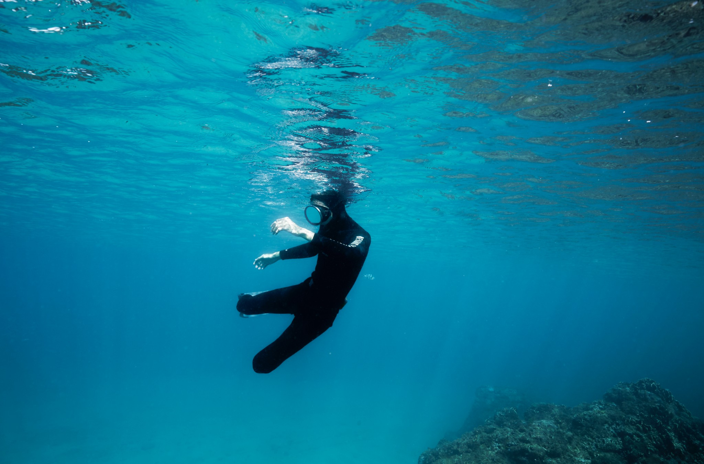
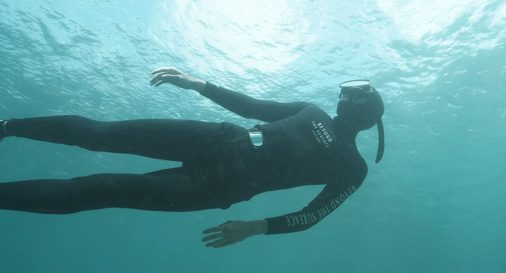

Under the surface.Underwater photography & film
TAIWAN · OCEAN JOURNAL
LIGHT / WATER / HUMAN
LIGHT / WATER / HUMAN
Selected photographs01 — 02

Between light and waterFreediving · SurfacePERSONAL WORK / FREEDIVING01—02
Moving images.
A quiet collection of moments beneath the surface.
Selected films will be added here.
MAODOUJACK
Underwater stories.
Underwater photography and cinematography.
A visual journal of the ocean, human movement, and the quiet moments below the surface.
Contact ↗